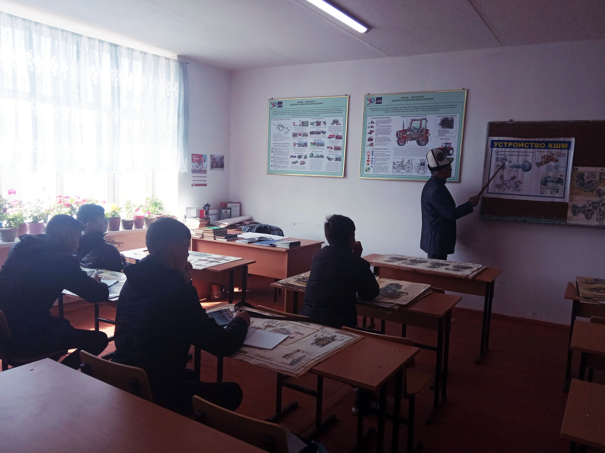

Наша работа
Экскаватор (от лат. excavo — «долблю, вынимаю») — основной тип землеройных машин, оснащённых ковшом. Основным назначением является разработка грунтов (горных пород, полезных ископаемых) и погрузка сыпучих материалов. Главным отличием одноковшового экскаватора от других землеройных машин является то, что экскавация (выемка) грунта (материала из штабеля[что?]) производится подвижным рабочим органом при неподвижном шасси.
Поворот ковша на разгрузку также производится при стоящей машине. Многоковшовые экскаваторы могут передвигаться во время набора грунта (траншеекопатели, например), но ковши обязательно двигаются отдельно от шасси.

Экскаваторы применяются во время строительства и сноса жилых зданий, дорожного строительства, а также в карьерах и на горных выработках.
Конструктивно экскаваторы состоят из рабочего (как правило, сменного), ходового (шасси) и силового оборудований. Рабочее место экскаватора, работающего ковшом, называют забой. Особенностью экскаваторов является широкий набор сменного оборудования — не только разные ковши, но и стрелы, рукояти, копровые мачты, а также собственно рабочие инструменты: ковши экскавационные, погрузочные, грейферные двух- и многочелюстные, рыхлители, крюки.
 +996 706 301 904
+996 706 301 904  lnstagram: @talas.pl.licey6
lnstagram: @talas.pl.licey6